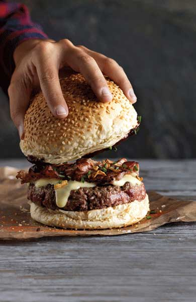

Hamburger

The best burger recipe for summertime grilling! This juicy burger is jam-packed with all kinds of stuff and has no tasteless bread crumbs. Serve on buns with your favorite condiments.
This hamburger recipe is flavorful, juicy, and incredibly satisfying.
ce qu'il vous faut
- Beef: These basic burgers start with 1 ½ pounds of lean ground beef.
- Onion: A finely chopped onion takes the flavor up a notch.
- Cheese: You’ll need shredded Colby Jack or Cheddar cheese.
- Egg: An egg lends moisture and helps bind the patties together.
- Seasonings, herbs, and sauces: These hamburgers are flavored with an envelope of dry onion soup mix, fresh garlic, garlic powder, soy sauce, Worcestershire sauce, dried parsley, dried basil, dried oregano, crushed dried rosemary, salt, and pepper.
etape
- Combine the ingredients in a bowl.
- Make four patties.
- Grill the patties until the juices run clear and the meat is no longer pink in the center.